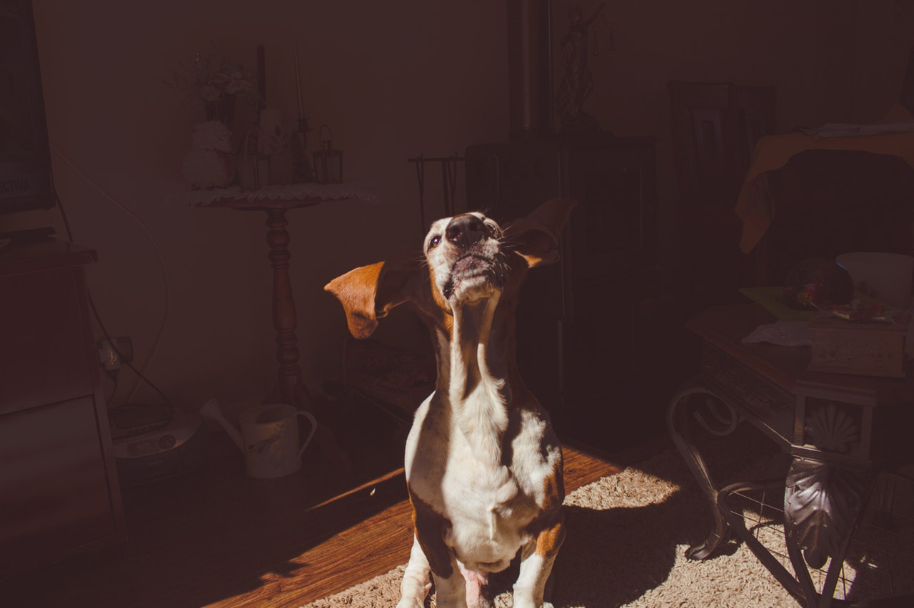
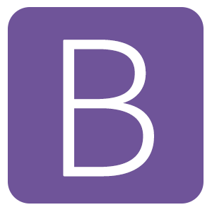
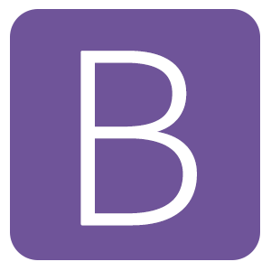

About Me

About Me
I am located in north Austin in Austin, TX. I am 23 years old and have involved in web programming for years but only decided it was what I wanted to do for a living in 2017
What I do
Develop and design websites and web-apps to be as efficent and maintainable as possible.
Primary focus on front end technologies, but open to learning back-end and full stack concepts and technologies as well.
Education
Some college courses towards a computer science degree at College of the Canyons in California.
Attended Thinkfull for their Full Stack Flex program.
Self taught as well previous to that with the use of books, and websites including TeamTreeHouse.com and the Odin Project.
What I try to accomplish on every project
Clean well written code.
Well commented code.
Focus on documentation when using services such as Github so any team members or other people working on the project can easily understand where the project is heading and where it has changed throughout development.
Approach to learning
I am always learning in my free time whatever I can, because I love web development as a whole. I would consider myself a very fast learner and a hardworker. I am more than happy to learn new languages or technologies on the fly or in my free time, and I always enjoy a challenge.
What I know so far


 

Portfolio
Caffiene Fix
Originally was a school project, that uses jquery to utilize Ajax and Json to display relevant search results for finding a drink which you input based on your area and gives you a breif list of the places near your location that have those drinks on their menu, and breif details about the results. GitHub link here Live link here.
Contact
Email: codyainsworth2@gmail.com Phone: 818-530-6132
Github Linkedin